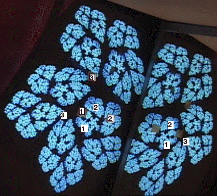
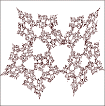
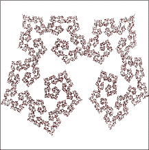

| Here is the videofeedback image we wish to synthesize by IFS. |
|  |
| We measure the source point coordinates p1 = (0, 0),
p2 = (2, 0), and p3 = (0, 2.5). |
| We measure the left side target point coordinates q1 = (.5, -1),
q2 = (.9, .6), and q3 = (-1.1, -.6). |
| We measure the right side
target point coordinates q1 = (6.3, -.7),
q2 = (6.2, .8), and q3 = (7.5, -.2). |
| With these we find the IFS rules and picture |
| r | s | theta |
phi | e | f |
| .83 | .66 | 76 |
76 | .5 | -1 |
| -.75 | .52 | -86 |
-67 | 6.3 | -.7 |
|
 | |
| To reduce the overlap we subtract .01 from r and s of the first transformation, add .01 to r and
subtract .01 from s of the second transformation. To soften the points we
change the second transformation theta to -80. |
| r | s | theta |
phi | e | f |
| .82 | .65 | 76 |
76 | .5 | -1 |
| -.74 | .51 | -80 |
-67 | 6.3 | -.7 |
|
 | |